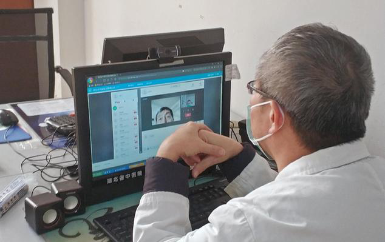

防治新冠肺炎
近日，北京大学医药管理国际研究中心主任史录文教授在接受新华网健康频道专访时表示，国内医疗大健康产业中长期发展前景“可期”，并分析了围绕人们健康需求的“研究好、生产好、监管好、服务好、宣传好”产品及服务闭环上，疫情会加速哪些产业的变革，又孕育着怎样的挑战与机遇。
研究好 基础研究有望获得高度重视。疫情暴发后，围绕病毒溯源研究、检测诊断、药物研究等疫情防控的一系列应急项目攻坚随之展开，在取得阶段性研究成果的同时，也暴露了不少问题和薄弱环节。如检测试剂质量“参差不齐”，相关基础研究成果及时向临床诊治应用的转化渠道不通畅等。
史录文表示，从国家药物政策的角度来看，由于多年来基础研究不足，还有不少“卡脖子”的技术瓶颈。不管是传染性疾病，还是癌症等重大疾病，都与基础研究密切相关。基础研究（一般指基础科学研究），是指认识自然现象、揭示自然规律，获取新知识、新原理、新方法的研究活动。企业一般不会有那么大的兴趣并长时间的投入重金去研究，但是没有基础研究，就像没有建设高速公路，如何能实现更快速和更远距离的传输？在重大疾病和重大传染性疾病方面，如果基础研究不到位，很难更好地帮助人们解决重大问题。
近期，国家科技部启动了几批应急攻关项目，明确在病毒病原和流行病学、动物模型、检测诊断、药物研发和临床救治，以及疫苗研发等方面进行重点部署，这也反映出国家在推动一些近期应急项目攻关的同时，也支持长期科研项目的开展。
通过此次疫情的警示，未来基础研究有望获得高度重视。因为加强基础研究是提高我国原始性创新能力、积累智力资本的重要途径，是跻身世界科技强国的必要条件，是建设创新型国家的根本动力和源泉。
生产好 以品牌建设推动高质量发展
新冠肺炎疫情发生后，全国各行各业都行动起来，积极奋战在抗“疫”一线。 “我们看到央企、国企在大灾大难面前冲锋在前，发挥‘顶梁柱’作用，有家国情怀、使命担当，有速度、有力量、有组织，并发挥出协同精神。”史录文说，在重大灾难如疫情方面，更能凸显品牌及产品质量的重要性。
近几年，国家出台了一系列政策，强化品牌建设，专门将每年5月10日定为“中国品牌日”，这标志着国家品牌战略的持续推进，打造中国品牌，发展品牌经济，已成为提升中国国际经济地位的重要举措，这也是中国文化和制度自信的一个基础。但目前在实际推进的过程中，还存在诸多问题。比如药品销售，它不仅仅是一个产品的销售，它还需要在符合市场规律的前提下，更好地体现对人的健康关怀与促进。因此，如何构建全社会的品牌意识和机制，让企业主动去树品牌，提升民族品牌产品的质量，未来仍有许多需要探讨的命题。
地坛医院新冠肺炎防治现场图
监管好 科学监管体系待升级。目前，随着我国人口老龄化速度的不断加快，心脑血管病、糖尿病、肿瘤等慢性病成为威胁人们健康的重要疾病。同时，我国城镇化建设的步伐也在不断加快，大城市人口集中，更需要加强对重大疾病及传染性疾病的防控体系建设。“尤其是药品、医疗器械等健康产品，如此次疫情急需的口罩、消毒剂等，都需要专业人士来指导开展工作并引导公众科学的应用，否则也会引发很多问题。”史录文表示，在围绕人们健康需求的产品和服务链上，科学监管体系的升级也至关重要，包括健康产品的研发新技术、新标准以及评价标准、技术规范等。这方面不能靠企业的一己之力去推动，需要国家来重视，如果这些技术发展不到位，同样会“耽误病情”。
湖北省中医院心内科程伟教授通过互联网医院线上问诊开方
服务好 “智慧医疗”发展进入快车道。疫情发生后，全国数万医护人员奔赴湖北支援，各地民众居家抗“疫”。史录文表示，在疫情期间，面对随之暴发的医疗物资短缺、医务工作者超负荷运转、普通患者就诊难等诸多问题，“远程会诊”“空中药房”等基于互联网、人工智能、大数据等现代科技为支撑的“智慧医疗”服务，将部分传统业务从线下推至线上，有力保障了市民生活和社会经济的正常运转。据了解，在此次疫情防控与患者救治过程中，中医治疗方案纳入国家诊疗方案，中医在预防、治疗、康复的全过程中发挥了重要的作用。好医需有好药，在复工困难的背景下，通过互联网远程抓药的“空中药房”、全自动中药房、全自动煎药机等多种“黑科技”上阵，大大提高了抓药产能和效率，为患者的中药供应提供了保障。对于居家抗“疫”的普通患者，中国医学科学院肿瘤医院、中国中医科学院广安门医院、湖北省中医院、天津市口腔医院等全国诸多医院纷纷开通“在线问诊”，为患者提供专业互联网诊疗服务。比如广安门医院互联网诊疗主要针对慢性病、常见病的复诊患者，通过互联网全面实现预约、挂号、复诊、调方、缴费及药品配送等系列服务，既方便了患者，减少了医院人流聚集，也避免了交叉感染的风险。史录文表示，疫情之后，以互联网、人工智能、大数据等为基础的“智慧医疗”服务将会得到更快速的发展和普及；服务于大健康的专业人才队伍建设将会加快发展；历史悠久的中医药事业，也有望迎来新的战略机遇期。宣传好 健康教育与科普继续“两加强”新冠肺炎疫情暴发后，公众对疫情信息高度关注，信息渠道和传播手段的多元化，让人类信息交互的“全程、全息、全员、全效”得到快速推动。但面对铺天盖地的各类信息，特别是一些缺乏专业操守的自媒体营销号，发布了一些不实或片面的信息，让人难辨真伪。在疫情面前，公众的生存意识、道德意识、规则意识、公共意识、健康素养等也是一次深度“检验”。史录文表示，健康科普需从两方面加强，一是专业机构和媒体要充分发挥自身的公信力、影响力，及时作出科学有效的指导；二是公众健康素养的提升。当前，我国科普投入以政府投入为主，科普人才还不充足，科普宣传与新媒体的结合还不够紧密，加强科普工作，将是经济社会发展中的一个重大课题。面对疫情，民众的健康意识空前高涨，对自身健康有了更多感悟。未来，围绕健康教育、健康管理、健康养生及养老等产业都将受到更多关注。因此，从多个层面来看，包括国家战略及政策的大力支持、人们健康需求的持续高速增长、疫情的刺激等，中国的大健康产业都具有可持续的高增长性。
南京市中医院“空中药房”，可以远程抓中药助力“抗疫”
更多相关图片
回到顶部
联系我们